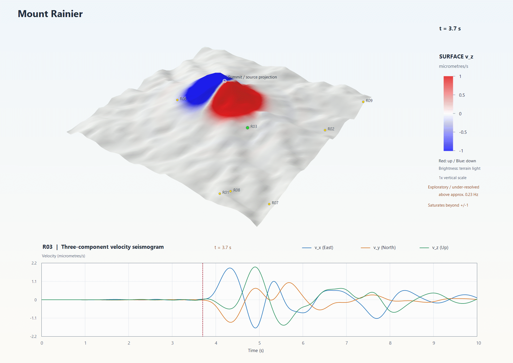

Momentum
Density ρ, velocity v, stress σ and body acceleration a; repeated indices are summed.
A three-dimensional tetrahedral discontinuous Galerkin solver for isotropic elastic and viscoelastic waves. One Python/JAX physics codebase combines FP64 kernels, passive Maxwell attenuation and CPU MPI face exchange.
Density ρ, velocity v, stress σ and body acceleration a; repeated indices are summed.
ε̇ = sym(∇v); CU = CR + ∑ ΔCℓ. Positive relaxed moduli, positive relaxation times and nonnegative branch stiffness provide passive attenuation.
